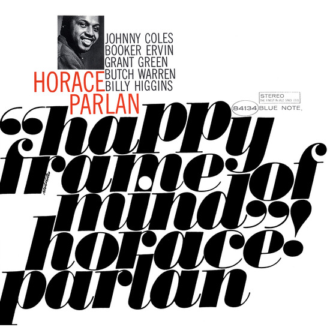

Jazz music is a broad style of music characterized by complex harmony, syncopated rhythms, and a heavy emphasis on improvisation. Black musicians in New Orleans, Louisiana developed the jazz style in the early twentieth century. Long considered one of the musical capitals of the United States, New Orleans fostered a robust ragtime and blues tradition. Early jazz musicians like Jelly Roll Morton and Louis Armstrong built on these blues and ragtime forms and improvised over them, which led to a brand new genre of American music.
Music historians trace jazz music to early twentieth century New Orleans, where musicians like Jelly Roll Morton, King Oliver, and Louis Armstrong borrowed heavily from ragtime, blues, and second-line horn sections from parades.
New Orleans funeral music inspired early jazz musicians. Southern jazz from New Orleans eventually became known as Dixieland jazz.
New York musicians like Charlie Parker, Dizzy Gillespie, Bud Powell, and Art Blakey developed a jazz subgenre called bebop. This style of music involved lightning fast playing, prolific soloing over chord changes, and routine syncopation.
Musicians like Ornette Coleman and the Modern Jazz Quartet challenged the harmonic rules of traditional jazz. Coleman, in particular, is credited with creating a genre called free jazz that largely disposed of the song form that guides most jazz standards.
Post-bebop (or post-bop) slowed down the tempo and added harmonic sophistication. Musicians like Thelonious Monk, Charles Mingus, and Miles Davis cut their teeth in bebop but became better known for their post-bop compositions. Davis developed a genre called cool jazz, which emphasized slower tempos, more minimal textures, and modal playing. Virtuoso saxophonists John Coltrane and Sonny Rollins were equally skilled in bebop, cool jazz, and even post-tonal improvisations like Coltrane's Ascension album.